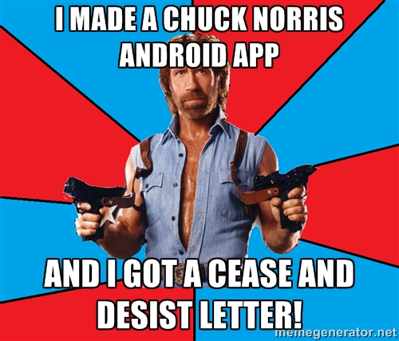

Learn how to get your Groovy on Google Glass and Android Wear!
G3 Summit 2016
Created by Ryan Vanderwerf / @RyanVanderwerf - OCI Grails Team
About Me
- Software Engineer on Grails team at OCI (New home to Grails)
- Father of 2 girls under 12
- Co-Chair Austin Groovy and Grails User Group
- Co-Author of Effective Gradle Implementation Video Series on Packt
- I like to modify all the things (cars, home automation, phones, gadgets)
- Into lots of Devops/Linux stuff and AWS
What we will cover
- What is the Glass and how does it work?
- Isn't that dead?
- Layout of Glass project
- Basic Glass Constructs
- Let's build a Glass app with Groovy!
- Overview of Android Wear
- Basic Android Wear Constructs
- Android Wear useful (or must have) libraries to help you
- Let's build a Wear App with Groovy!
- Walkthrough and demo of some Groovy Android Wear Apps
What is Google Glass?
Glass is a wearable computer on your head disguised as glasses, running Android
TI OMAP 4430 CPU Dual Core
1/2GB RAM(depends on v1/v2/3)
12GB Available Internal storage
Wifi & Bluetooth connectivity
micro usb port
720p video/5MP camera
640×360 Himax HX7309 LCoS display
3 axis gyroscope, accelerometer, and compass
Bone conduction audio transducer
Runs Android 4.4.2W
Lasts about 8 hours of snapping still, 45 min video
Isn't Glass Dead?
Nope! A couple things happened which brought about end of the public explorer program:
- TI Stopped making the processors - doh!
- Social backlast against 'Glassholes'
- Too expensive
- Remaining units held back for 'Glass At Work' Program & Warranty replacement
... but it still works great!
- Support remains - API docs, flow designer, and API still work!
- XE SDK hasn't had any real updates, assuming they are waiting for new device to see if they need changes
- Examples updated for Android Studio
- Corporate use 'Glass at Work' program still alive and well!
Is Glass Coming Back?
For business it never left. Consumer? maybe not for a while. Google has promised to build a new one since the but they are intented for limited enterprise use (Lots of medical). This will definately keep evolving for business use, for the use case for everyday for consumers? Likely not. The world wasn't socially ready for people to walk around all the time with those on.
.. but there are still a TON of good real-world uses!
So what can I do with this thing and not be a Glasshole?

Some good uses that I use it for or plan to:
- Being a totally lazy tourist and snapping lots of pics without phone out
- Fitness (Especially Biking, you can have a GPS up hands free!)
- Cooking, Doctors, Plumbers, Auto mechanics, etc. Anything dirty and you need your hands free
So what kind of apps can I make with this thing?
There are several APIs
- Mirror API (Server Side/REST Interface/Google API)
- GDK 19(4.4.2)
- Flow Designer (Tool to help visualize app flow/cards)
How the heck do I get groovy working on this thing? What do I do first?
- grooid-templates - spit out working example - this helps a lot because if you projet isn't right you waste a TON of time trying to figure out what's wrong (on any android-groovy project)
- all the Groovy goodness libs like Swissknife built in ready to go!
There is no emulator - what do I do?
- Find even new/unused pairs on ebay for 650 or used for even less
- You can use ASM or Seven-Square with ADB to share what someone sees
grooid-templates - lazybones makes Android easy!
- Uses lazybones to create Android Apps and Libs
- Mario Garcia maker of grooid-templates for mobile and libs
- I've made a fork that has glass and wear templates: https://github.com/rvanderwerf/grooid-templates
- Let's see an example of setting it up and generating a Glass app!
grooid-templates - lazybones makes Android easy!
use lazybones to make a glass app: lazybones create grooid-glass-new-project G3SummitDemo
Mirror API
Server side solution, authenticates as any other Google API on your API console
- step 1 authorize your app on your google account: https://console.developers.google.com/
- step 2 build your app! Grails 3 app would fit excellent here
- Demo Mirror API app in Java (candidate to port to Grails 3!)https://github.com/googleglass/mirror-quickstart-java
- What can it do? deliver notification in your timeline and manage contacts, mostly
GDK (Glass Development Kit) 4.4.2W
Supports API level 19 (look at SDK 19 in SDK Manager)
- Most things that have simple nav can sort of work or load
- Use the grooid-templates
- In dev mode, you can use your own voice keywords!
GDK (Glass Development Kit) 4.4.2W
Hardware you have access to:
- Voice Input https://developers.google.com/glass/develop/gdk/voice
- Touch Gestures (https://developers.google.com/glass/develop/gdk/touch) (DPAD+Gestures)
- Location and Sensors https://developers.google.com/glass/develop/gdk/location-sensors
- Sensors: On Head State, Accelerometer, Gravity, Gyroscope, Light, Compass, Rotation
- Camera https://developers.google.com/glass/develop/gdk/camera
Let's generate and demo a quick app!
Android Wear!

Now Let's Learn About Making Android Wear Groovy
- Glass most likely formed the starting point for Wear
- Watch just the first kind of Wear device
- Focused mostly on notifications as cards
- For now, needs to be tethered to mobile app for network access(changing as we speak!)
- Fun games too!
What Does A Wear App Look Like?
Looks like many things!
- A Watch Face
- Full Screen Game
- Scrolling Cards (either direction)
- Simple Cards (notification)
- The idea is to keep it simple.. there's not a lot of screen to work with!
- Recommended UI patterns here: https://developer.android.com/design/wear/patterns.html
... but Android is Hard!
In comes Groovy... we can make this easier with SwissKnife!
- Annotations and Injection kill boilerplate code!
- auto injects views on objects
- add callback methods with just an annotation
- execute elements on UI thread or background with annotation
- make anything parseable with annotation
- inject resources with @res annotations
- read intent extras with @Extra annotation
- See this great general android-swissknife tutorial http://bit.ly/1Kv7fXc
- SwissKnife source at https://github.com/Arasthel/SwissKnife
Some More libs to make Wear apps easier!
Emmet (https://github.com/florent37/Wear-Emmet)
- Wrapper lib for the google data layer APIs to communicate between the phone and the watch (this gets data downloaded from the app to the watch)
- We will see an example shortly. With wifi enabled we won't need this as bad!
Some More libs to make Wear apps easier!
Davinci (https://github.com/florent37/DaVinci)
- lib to ease downloading images to wear devices that don't have direct net access - big time saver
- fork that works with newer Google Play Services https://github.com/MDXDave/WearImageLoader
Some More libs to make Wear apps easier!
Sugar ORM (http://satyan.github.io/sugar/)
- lib to ease downloading images to wear devices that don't have direct net access - big time saver (or use JOOQ!)
Chuck Norris Quote Wear Demo!
Let's demo an app that brings this all together! Channeling my inner Ken Kousen, let's get some Chuck Norris going!
We will use grooid-templates to make a new wear app. It starts as a Chuck Norris app, you can take it from there!
lazybones create grooid-wear-new-project testCarlosWear
Chuck Norris Quote Wear Demo!
If you see this error don't fret! run the build again and it will work: Execution failed for task ':mobile:compileDebugGroovy'. Unable to load class android.support.v7.app.ActionBarActivity due to missing dependency android/support/v4/view/LayoutInflaterFactory
Android + Wear + Grails 3 + Lego Minstorm EV3 Demo
Let's tie this together and mash up all sorts of Groovy Stuff!
- Grails 3 Lego Rover Project
- Android Mobile Tether App to Configure
- EV3 Lego Robot Running Groovy
- Wear App to Drive the Robot!
THE END
I hope you have enjoyed the session!
Free free to contact me on twitter or google+ @RyanVanderwerf or email rvanderwerf@gmail.com